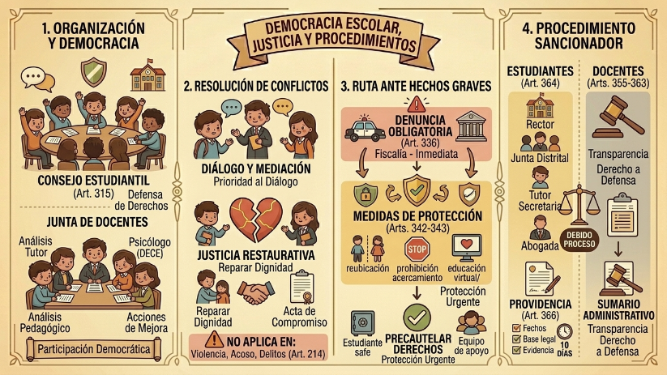

El Código Orgánico de la Niñez y Adolescencia (Art. 1) es el pilar de la protección integral. Su aplicación es universal, abarcando desde la concepción hasta que el individuo cumple los 18 años (Art. 2). El código hace una distinción técnica clara: niño/a es quien no ha cumplido 12 años, mientras que adolescente es quien está entre los 12 y 18 años (Art. 4). Esta distinción es vital porque define el alcance de la protección y, en el caso de infracciones a la ley, el tipo de respuesta estatal.

Formas de Maltrato y Abuso
La ley define el maltrato (Art. 67) de forma amplia: cualquier acción u omisión que dañe la integridad física, psicológica o sexual. Es preocupante notar que el maltrato institucional —cometido por servidores públicos o privados— genera responsabilidad tanto en el autor directo como en la autoridad de la institución (Art. 67). El abuso sexual (Art. 68) es tipificado como cualquier contacto físico sexual, incluso si existe un "aparente consentimiento", debido a la asimetría de poder. El código también enfrenta realidades graves como la explotación sexual (prostitución y pornografía, Art. 69) y el tráfico de menores (Art. 70), catalogándolos como violaciones extremas de derechos.
Justicia Especializada: Inimputabilidad y Medidas Socio-educativas
En el ámbito penal, el código establece un principio irrenunciable: los adolescentes son penalmente inimputables (Art. 305). Esto significa que nunca serán juzgados por jueces penales comunes ni recibirán penas de adultos. Su responsabilidad se maneja a través de medidas socio-educativas (Art. 370). Los niños y niñas, por su parte, son absolutamente inimputables (Art. 307): si son encontrados en delito flagrante, no pueden ser detenidos; deben ser entregados a sus representantes legales.